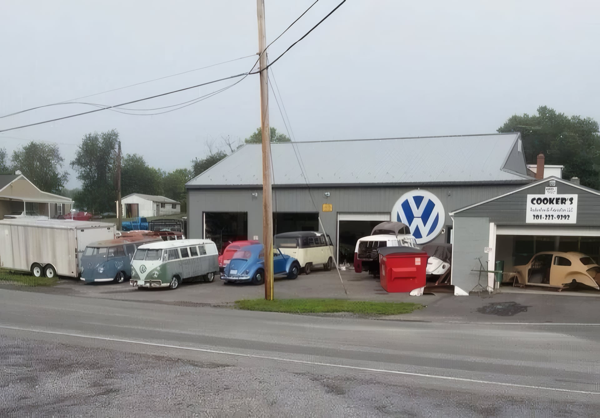

Bob Cook fell in love with air-cooled Volkswagens at 19 years old. While working as a builder — framing houses, swinging hammers — he spent every spare hour and every spare dollar restoring VWs out of genuine obsession. Not for money. Not for recognition. Because he loved these cars, and because he was unnervingly good at bringing them back to life.
For years it stayed that way: a day job and a calling. Then 2009 arrived, and the housing market collapsed beneath him. What looked like a disaster turned into permission. Bob went full-time, hung out a shingle as Cooker's Restoration & Fabrication, and got to work.
The business didn't need advertising. Word spread through the air-cooled community the way it always does — one car at a time, one show, one conversation. Customers who brought Bob a basket case and got back something better than factory-spec told two friends. Those friends told four more. Within a few years, the wait list stretched to two years before a new customer could get their car into the shop.
Today, Cooker's cars appear regularly in Hot VWs magazine — multiple features, multiple covers. They've taken Best of Show at major East Coast VW shows more times than any shop would dare count publicly. And they come from everywhere: Alabama, California, North Dakota, and places further still. Customers drive cross-country or ship their cars across the country because there is simply no substitute for work done at this level.
The shop handles everything: full frame-off restorations, performance engine builds, turbo conversions, custom fabrication, body and paint, suspension, wiring, interior — from the oldest air-cooled Bug to the last Vanagon Syncro. If it doesn't have water in the cooling system, Bob has probably restored one, and done it better than anyone expected.
More than 20 years in. Still the same obsession. Still the same standard.

In September 2017, National Public Radio ran a feature story on Cooker's — not because we sought it out, but because the story told itself. The piece aired on All Things Considered and captured what makes this shop different: a craftsman who chose obsession over convenience, and built a two-year wait list without spending a dollar on advertising.
Cooker's cars have appeared in Hot VWs magazine multiple times, including covers. They've taken Best of Show at major East Coast air-cooled shows. They've attracted customers from Alabama, California, North Dakota, and everywhere in between — people who ship their cars across the country because they've decided there's only one shop they trust.
🎙 Listen to the NPR StoryFrom simple engine rebuilds to full frame-off restorations — if it involves an air-cooled VW, we can do it.